Отчёт по работе · 11 сентября 2026
Что собрано, что написано, что уже стоит на сайте и что осталось до запуска.
Блок 1
То, чего на сайте не видно, но без чего его бы не было. Здесь ничего не придумано: всё собрано из ваших же материалов.
Работа началась не с вёрстки, а со сбора. Ваша жизнь в интернете была разложена по семи местам, и каждое пришлось забирать отдельно.
| Источник | Что взяли |
|---|---|
| make-air.com, старый сайт на Tilda | каталог работ, цены, разметка страниц. Разобрана страница целиком, 492 КБ кода |
| makeair-interior.com, второй сайт на WordPress | 175 карточек работ, 64 записи блога за 2016–2026, 15 страниц, 1 933 фотографии |
| Отрендеренные страницы портфолио | тело карточек. Обычной выгрузкой оно не отдаётся, пришлось открывать страницы браузером |
| Instagram, три аккаунта | 172 фрагмента вашей речи: 35 из галереи, 70 из школы, 67 из терапии |
| Reels | 137 расшифровок. Устную речь никакая нейросеть не пишет: в ней остаются оговорки и настоящий ритм фразы |
| ВКонтакте | публикации, забраны управляемым браузером — открытого доступа там нет |
| Яндекс.Карты | карточка мастерской: адрес, часы, оценка 5,0 при 114 отзывах |
| OpenStreetMap | 663 элемента карты квартала — из них нарисован план вокруг мастерской |
| Яндекс.Вордстат и подсказки Google с Bing | спрос: по каким словам вас ищут в России и за рубежом |
| KIE.AI | музыка для сайта и кастинг голосов для озвучки |
Чтобы тексты на сайте звучали как вы, а не как нейросеть, сначала был собран эталон — ваша настоящая речь.
52 ноты, 14 179 строк, 47 записанных решений с объяснением, почему сделано именно так. Это нужно, чтобы следующий человек не переоткрывал заново то, что уже разобрано.
Блок 1, продолжение
Прежде чем писать заголовки, был собран рынок. Отдельно русский, отдельно английский — механика поиска в них разная.
Сайт был написан словами, которых не набирают. Ваша техника называется «рельефная живопись» и «фактурная живопись» — 229 и 351 показ в месяц. Тот же товар рынок ищет как «объёмные картины» (10 861) и «текстурная картина» (6 224). Разрыв тридцатикратный.
Ваш словарь не меняли: он ваш, и в текстах он остался. Но в заголовках, описаниях и подписях к фотографиям теперь стоят оба слова сразу.
Люди ищут не картину вообще, а картину в комнату. «Картина в гостиную», «над диваном», «в спальню» — кластер на 328 000 показов в месяц. Под него сделаны отдельные страницы, и по ним же названы файлы фотографий.
Английский покупатель ищет автора, а русский — картину. В английском ядре из 422 фраз про автора 367 денежные: «buy directly from artist», «commission a painting». Русское ядро так не устроено. Поэтому английская версия построена вокруг вас, а не только вокруг каталога.
Эпоксидная смола подтвердилась — 15 714 показов в месяц, рост к прошлому году +36%. Раздел сделан.
Блок 2
| 510 | страниц: 253 русских и 253 английских, плюс служебные |
| 137 | картин показывается в каталоге, всего в базе 140 записей |
| 19 | предметов декора: зеркала, вазы, арт-объекты |
| 60 | записей журнала, с 2016 по 2026 год |
| 25 | разделов каталога: 20 подборок, из них 8 — по комнатам, и 5 авторских серий |
| 5 | авторских серий: «Смыслы», «Рыбы в космосе», «Море», «Радужные вибрации», «Суеверная продукция» |
| 9 | выставок с 2016 года и 2 награды — собраны из выгрузки, ничего не дописано от себя |
| Что | Русский | Английский |
|---|---|---|
| Текстов о работах | 158, 21 632 слова | 140, 24 672 слова |
| Описаний декора | 19 из 19 | 19 из 19 |
| Записей журнала | 60 | 60 |
| Словарь терминов каталога | исходник | 483 термина |
Английская версия — не перевод, а отдельный текст тем же голосом. Со старого сайта не скопировано ничего: там тексты писала машина, и они уже проиндексированы. Дословный перенос столкнул бы два ваших сайта в выдаче — поисковик считает это дублем и оставляет один. Взяли только фактуру: что на холсте, размер, техника. Совпадение со старым английским — 1,69%, и это названия работ.
Все тексты идут от первого лица: сайт целиком ваша прямая речь. Проставлено 140 английских названий — на втором сайте их нет вовсе.
Вы спросили, как вообще находят художника, чтобы позвать на интервью, на выставку или снять репортаж в мастерской. Ответ дал замер, а не рассуждение — считали 10 сентября, тем же способом, что и весь спрос выше.
artist press kit в Google спрашивают сами художники — «шаблон», «пример», «как сделать»Раздел всё равно сделан, но маленький — одна страница на двух языках. Работает она не как приманка, а как ответ тому, кто уже услышал вашу фамилию и набрал её в поиске. По запросу «Ксения Елисеева художник» все десять мест первой страницы Яндекса заняты вами, но первым стоит группа ВКонтакте, а нового сайта в выдаче нет вовсе. У группы ВК нет ни биографии, ни списка выставок, ни контакта для прессы — а редакции нужны именно они.
На странице: пресс-кит одним архивом (3,6 МБ — справка на двух языках, выставки и награды, портрет и десять работ в jpeg без интерьерных подстановок), справка в двух длинах, факты для подписи под материалом, публикации о вас, условия съёмки в мастерской и контакт для прессы отдельной строкой.
eliseevalab.ru — «Мастерская аэрографии Ксении Елисеевой», третья строка в выдаче по вашему имени. В проекте о нём не было ни строки: мы знали про два старых сайта, Tilda и второй, а этот живёт сам по себе и в разметке с новым сайтом не связан. Для поиска это пока два разных человека с одной фамилией. Решать, что с ним делать, вам — влить в новый сайт или оставить отдельно и связать.
0-1680.webp, стало ksenia-eliseeva-vechnyj-rost-kartina-v-gostinuyu-0-1680.webp. Имя файла Яндекс читает как один из сигналов; сделано до запуска, поэтому не стоило ни одного редиректаФормат кадров — WebP. Его индексируют Яндекс.Картинки; более лёгкий AVIF в выдаче не встречается вовсе. Замеряли руками: 880 адресов картинок из выдачи, WebP — 38 с девятнадцати разных сайтов, AVIF — ноль.
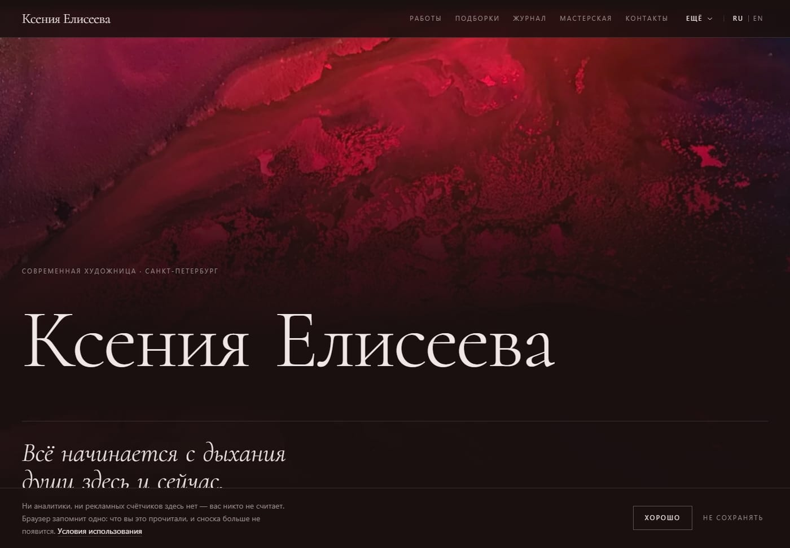
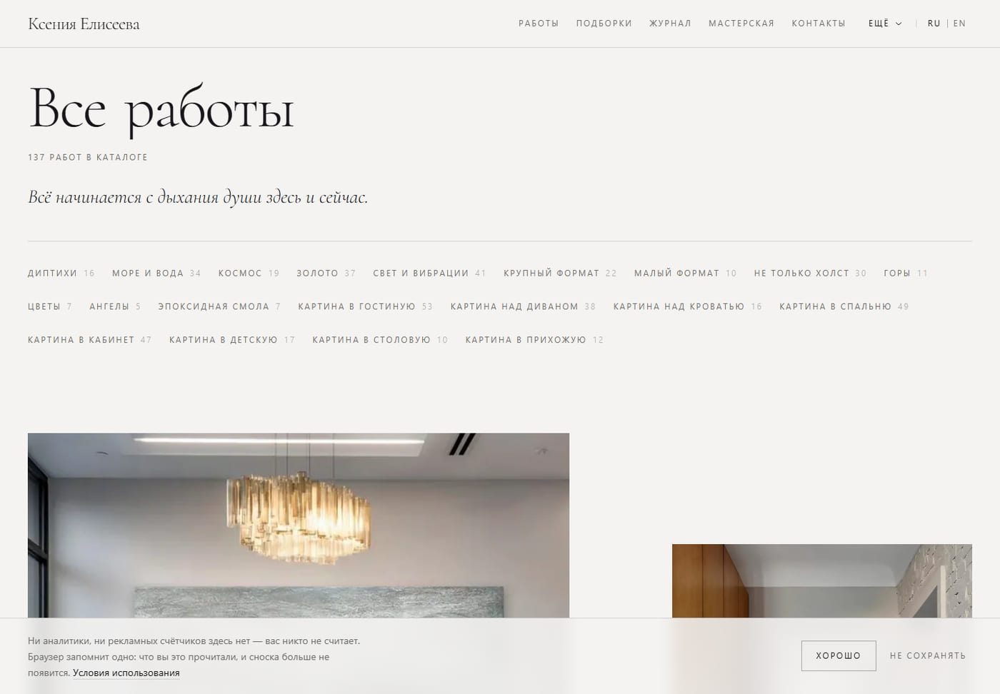
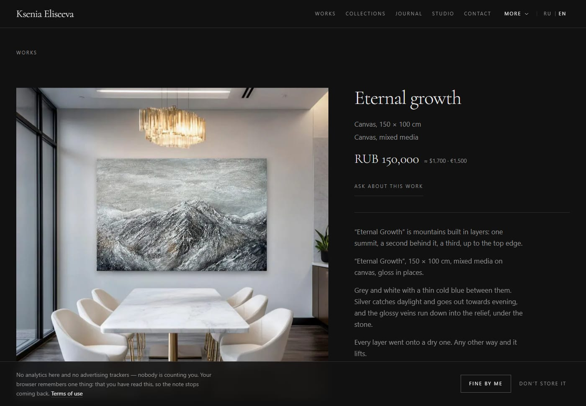
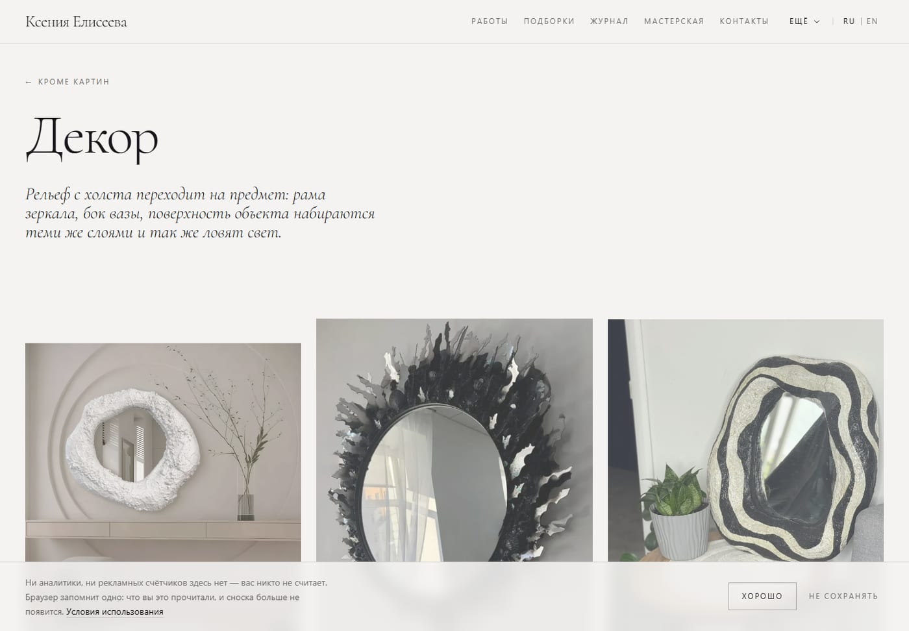
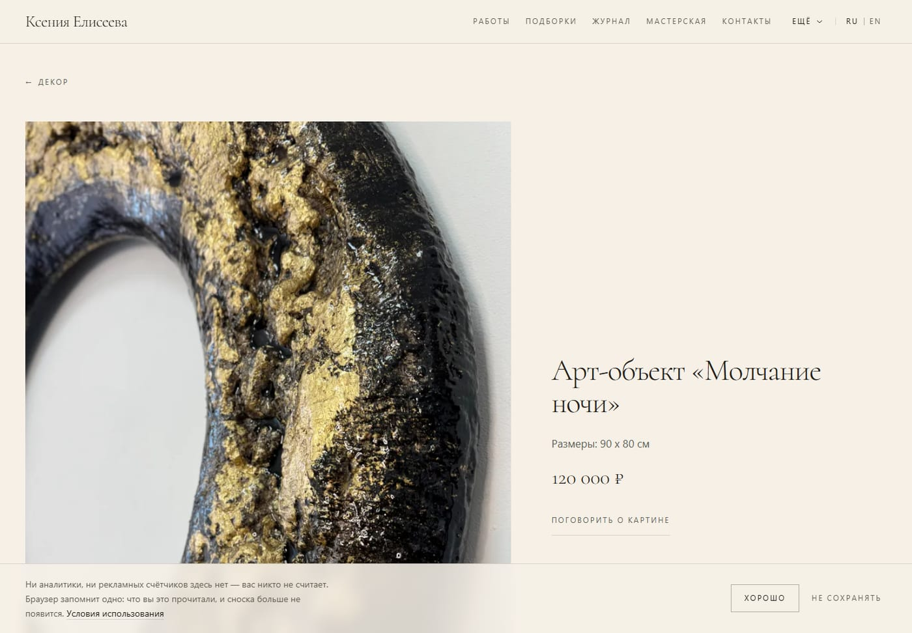
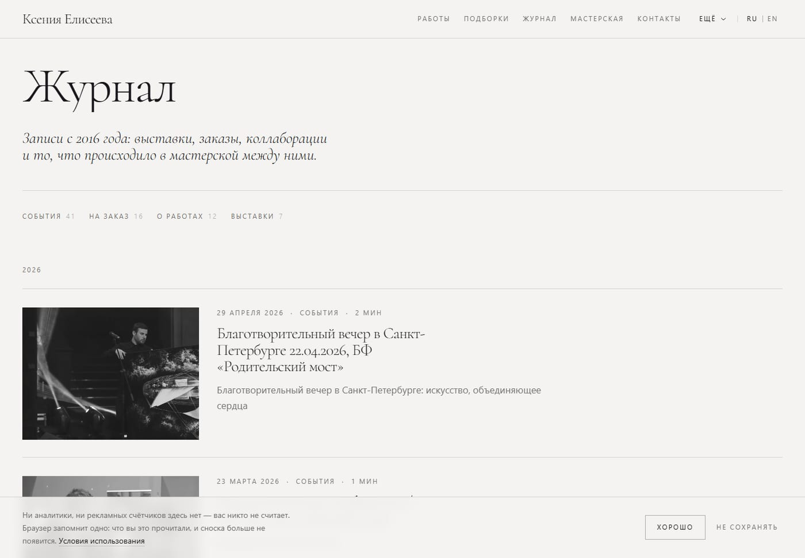
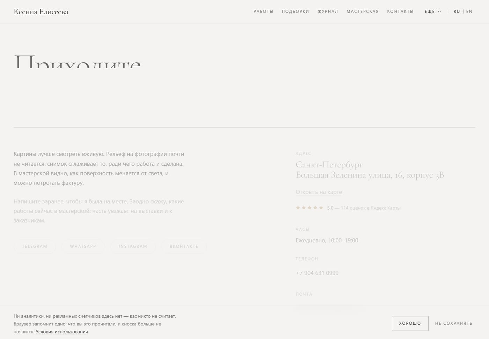
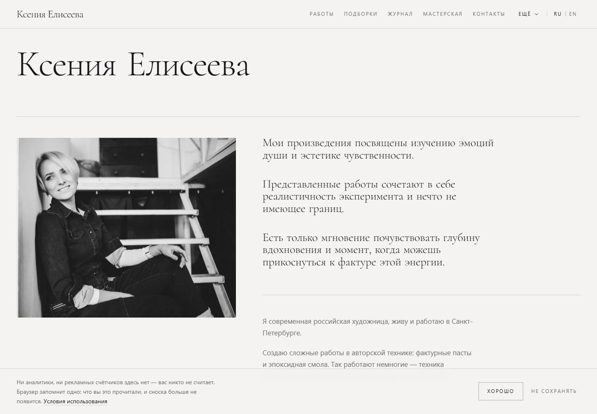
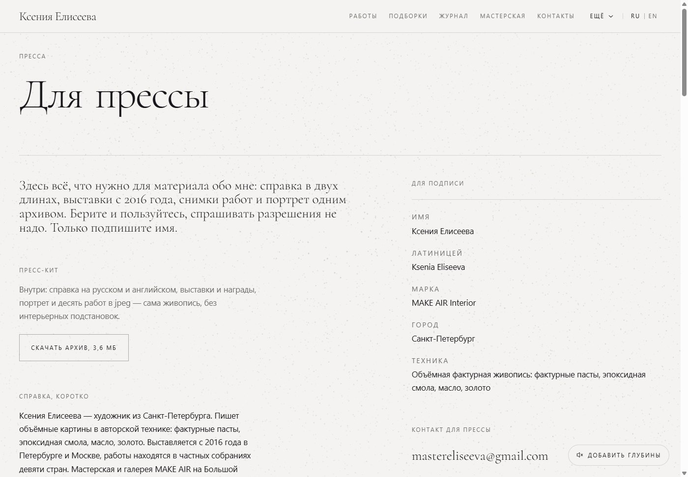
С телефона сайт выглядит так — на нём его и будут смотреть чаще всего:
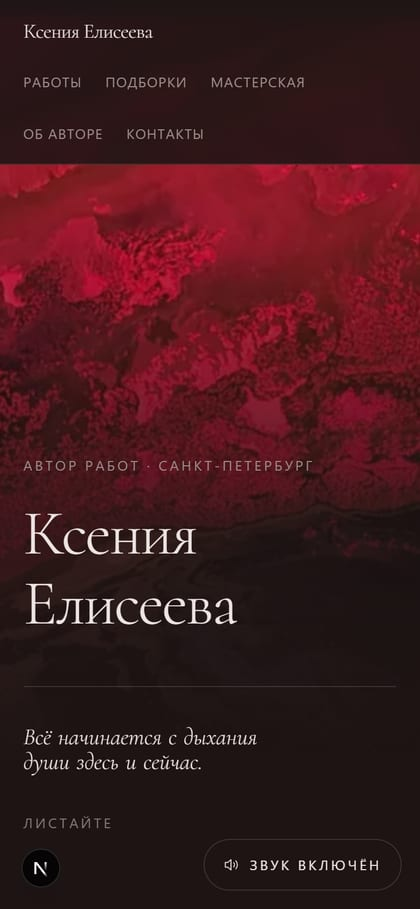
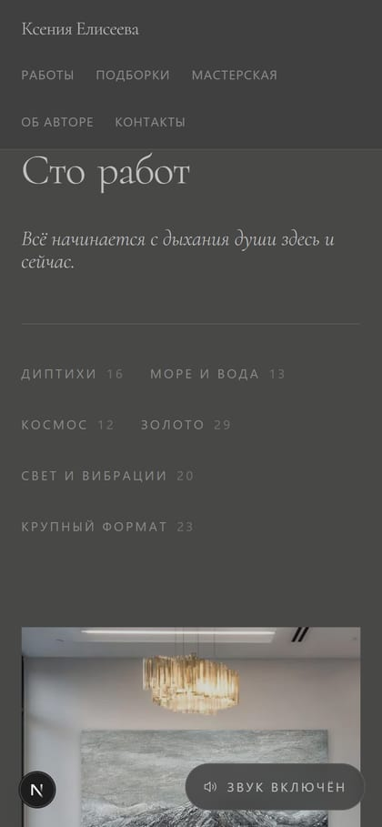
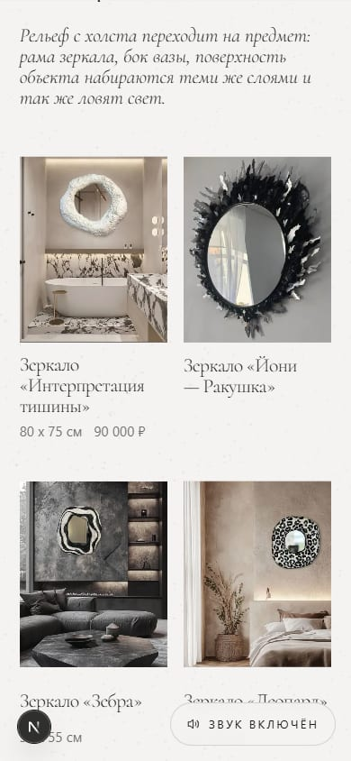
Блок 2, главное
Красивый сайт, которого не находят, стоит ровно столько, сколько стоит визитка в ящике стола. Поэтому эта часть — самая большая.
Это то, что человек видит в выдаче: синяя ссылка и две строки под ней. Вот настоящая страница «Вечного роста» так, как её увидят в Яндексе:
Заголовок держит слово «объёмная картина» — то, что набирают. Описание — первая фраза вашего текста, а не строка формуляра.
Разметка Schema.org проставлена по всему сайту: художник, сайт, произведение с ценой, статья журнала, галерея с часами и координатами, вопросы-ответы, хлебные крошки. Из неё поиск собирает расширенный сниппет — цену и картинку прямо в выдаче.
Блок 2, изнутри
Короткий ответ на вопрос «а почему так долго». Каждое направление копалось до конца, а не до первого правдоподобного результата.
Сначала собран эталон вашей речи, потом по нему написан каждый текст, потом каждый текст замерен: длина, длинные тире, запрещённые обороты, повторы предложений между текстами. Тексты, не прошедшие замер, переписывались. Для описаний декора замер вышел такой: 119–133 слова при норме, по одному длинному тире на текст, ноль «словно» и «будто», ноль повторяющихся фраз между семнадцатью текстами.
Сайт не красится в фирменные цвета — их у него нет. Для каждой из 140 работ просчитана палитра, и среда страницы меняется вслед за картиной: тёмная работа затемняет экран, золотая делает его тёплым. Движение на сайте пружинное, а не по таймеру: страница ведёт себя как физический предмет, а не как слайд-шоу.
Инструментальная музыка написана специально для сайта — трек Depth, 3:27, играет по кругу; второй, Breath, сгенерирован и лежит в запасе. Для озвучки первого экрана проведён кастинг: восемь женских голосов на русском и английском, с описанием сцены — тихая галерея, приглушённый свет, живой человек, а не диктор. Демо собрано отдельной страницей, чтобы выбрать голос на слух.
Блок 3
.com, .art или .galleryСейчас сайт закрыт от индексации целиком, и это сделано намеренно: пока адрес служебный, попадание в индекс создало бы дубль. Открывается одной правкой в день запуска.
Яндекс.Бизнес (забрать права на существующую карточку — 5,0 при 114 отзывах; вторую не создавать, дубль делит отзывы), ответы на отзывы в Яндекс.Картах, OpenStreetMap (из него берут данные карты Apple), 2ГИС, Bing Places, Wikidata. Поля для всех сервисов уже подготовлены дословно.
Нужен ваш ответ
Ответьте прямо здесь — в полях. Внизу одна кнопка: она соберёт всё написанное в одно сообщение и отправит его. Ответы сохраняются в браузере, можно закрыть страницу и вернуться.
Кнопка открывает Telegram с уже готовым сообщением — останется нажать «отправить». Если Telegram не откроется, нажмите «Скопировать текстом» и вставьте ответ в любой мессенджер.